FXby Gab Calisman
Cadeia de sinal
arraste os aparelhos para mudar a ordem · arraste da prateleira para adicionar
Cadeia vazia. O som passa limpo, bit a bit.
Arraste um efeito da prateleira para cá, ou toque nele.
Prateleira
15 aparelhos · toque para ligar/desligar da cadeia
Follower
segue o volume da entrada
→
Prévia no navegador com motor simulado. No plugin, tudo usa o áudio real.